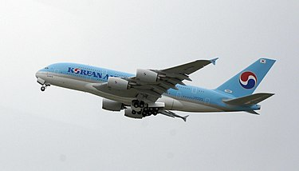

สาธารณรัฐเกาหลี
(เกาหลีใต้)
.png)
ธงชาติ
"การบริหาร"
นาย คิม แด-จุง ประธานาธิบดีคนที่ 8 ของเกาหลีใต้ ได้รับรางวัลโนเบลสาขาสันติภาพใน ค.ศ. 2000
ในฐานะที่เป็นผู้ผลักดันประชาธิปไตยในเกาหลีใต้และเอเชียตะวันออก ได้รับการยกย่องเป็น "เนลสัน แมนเดลา" ของทวีปเอเชีย
"การเมืองการปกครอง"

หลังสิ้นสุดสงครามโลกครั้งที่ 2 ในปี 2491 คาบสมุทรเกาหลีถูกแบ่งเป็นสองส่วนโดยเส้นละติจูดที่ 38 องศาเหนือ (มักเรียกว่าเส้นขนาน 38) โดยสหภาพโซเวียตดูแลเกาหลีเหนือ มีการปกครองระบอบสังคมนิยม ส่วนสหรัฐดูแลเกาหลีใต้ มีการปกครองระบอบประชาธิปไตย
สาธารณรัฐเกาหลี (เกาหลีใต้) ปกครองในระบอบประชาธิปไตย ประมุขของประเทศคือประธานาธิบดี ซึ่งได้รับการเลือกตั้งโดยตรงจากประชาชนให้เป็นหัวหน้าฝ่ายบริหาร มีนายกรัฐมนตรี ซึ่งได้รับการแต่งตั้งโดยประธานาธิบดีผ่านความเห็นชอบจากรัฐสภา รัฐสภาเป็นองค์กรนิติบัญญัติ และศาลทำหน้าที่ทางตุลาการ ทั้งนี้ เกาหลีใต้มีการแบ่งเขตการปกครองเป็น 9 จังหวัด และ 8 นครระดับจังหวัด (โซล ปูซาน อินช็อน แทกู ควังจู แทจ็อน อุลซัน เซจง)
โครงสร้าง
เกาหลีใต้เป็นหนึ่งในประเทศเศรษฐกิจหลักในกลุ่ม 20 เป็นประเทศพัฒนาแล้วที่มีเศรษฐกิจที่มีรายได้สูง แบรนด์ดังของเกาหลีใต้ เช่น แอลจี อีเลคทรอนิคส์ และ ซัมซุง มีชื่อเสียงระดับนานาชาติในด้านอุปกรณ์อิเล็กทรอนิกส์และสินค้าอื่น ๆ
แม้ว่าเศรษฐกิจเกาหลีใต้จะมีศักยภาพในการเติบโตสูงและมีเสถียรภาพทางโครงสร้างที่ชัดเจน แต่ประเทศก็ยังได้รับความเสียหายจากการจัดอันดับความน่าเชื่อถือในตลาดหุ้น เนื่องจากการสู้รบของเกาหลีเหนือในช่วงเวลาที่เกิดวิกฤตทางทหารอย่างรุนแรง ซึ่งส่งผลเสียต่อตลาดการเงินของเกาหลีใต้ กองทุนการเงินระหว่างประเทศชื่นชมการฟื้นตัวของเศรษฐกิจเกาหลีใต้ต่อวิกฤตเศรษฐกิจต่าง ๆ โดยอ้างถึงหนี้ของรัฐที่ต่ำและทุนสำรองทางการคลังที่สูงซึ่งสามารถระดมได้อย่างรวดเร็วเพื่อจัดการกับเหตุฉุกเฉินทางการเงิน แม้ว่าจะได้รับผลกระทบอย่างรุนแรงจากวิกฤตเศรษฐกิจเอเชียในช่วงปลายทศวรรษ 1990 แต่เศรษฐกิจของเกาหลีใต้สามารถฟื้นตัวอย่างรวดเร็วและทำให้จีดีพีของประเทศเพิ่มขึ้นสามเท่าในเวลาต่อมา
นอกจากนี้ เกาหลีใต้เป็นหนึ่งในประเทศพัฒนาแล้วไม่กี่ประเทศที่สามารถหลีกเลี่ยงภาวะถดถอยในช่วงวิกฤตการเงินโลกได้ อัตราการเติบโตทางเศรษฐกิจสูงถึง 6.2% ในปี 2010 (เติบโตเร็วที่สุดในรอบแปดปีหลังจากการเติบโตอย่างมีนัยสำคัญ 7.2% ในปี 2002) และเป็นหนึ่งในประเทศที่มีอัตราการว่างงานต่ำ

การท่องเที่ยว
การท่องเที่ยวของเกาหลีใต้ได้รับแรงผลักดันจากหลายปัจจัย รวมถึงความโดดเด่นของวัฒนธรรมป๊อปเกาหลี เช่น เพลงป๊อปของเกาหลีใต้และละครโทรทัศน์ ที่รู้จักกันในชื่อคลื่นเกาหลี หรือ (Hallyu) ได้รับความนิยมไปทั่วเอเชียตะวันออก สถาบันวิจัยฮุนไดรายงานว่ากระแสเกาหลีส่งผลกระทบโดยตรงในการส่งเสริมการลงทุนโดยตรงจากต่างประเทศกลับเข้ามาในประเทศผ่านความต้องการสินค้าและอุตสาหกรรมการท่องเที่ยว ในบรรดาประเทศในเอเชียตะวันออก ชาวจีนเป็นชาติที่เดินทางเข้ามาท่องเที่ยวและทำการลงทุนในเกาหลีมากที่สุด
.jpg)
วงการบันเทิง
กาหลีใต้ยังมีอุตสาหกรรมบันเทิงที่เฟื่องฟู ซึ่งความบันเทิงของเกาหลีใต้ในแง่มุมต่าง ๆ รวมถึงละครโทรทัศน์ ภาพยนตร์ และเพลง ได้สร้างรายได้ทางการเงินที่สำคัญให้กับเศรษฐกิจของประเทศ ปรากฏการณ์ทางวัฒนธรรมที่เรียกว่า "กระแสเกาหลี" ได้กวาดล้างหลายประเทศทั่วเอเชีย ทำให้เกาหลีใต้เป็นประเทศที่มีอำนาจรายใหญ่ในฐานะผู้ส่งออกวัฒนธรรมป๊อปและความบันเทิง แข่งขันกับประเทศตะวันตก เช่น สหรัฐอเมริกาและสหราชอาณาจักร

อาหาร
อาหารเกาหลีที่เป็นที่รู้จักกันดีที่สุดคือกิมจิ ซึ่งเป็นผักดองที่เป็นเอกลักษณ์ และพีบิมบับ หรือ "ข้าวยำเกาหลี" มีลักษณะเป็นข้าวสวยโรยหน้าด้วยผักที่ปรุงแล้วนิยมทานร่วมกับไข่ดาว น้ำพริก ไข่ลวก และเนื้อสัตว์ชนิดต่าง ๆ คลุกให้เข้ากัน รวมทั้ง ต็อกโบกี หรือ เค้กข้าว-ผัด ทำมาจากแป้งต๊อกเนื้อนุ่ม ผัดกับซอสรสเผ็ด ใส่เครื่องเคียงเพิ่มทั้งผัก เนื้อสัตว์ ออมุก ไข่ต้มและชีส
link rel="icon"
"การบริหาร"
นาย คิม แด-จุง ประธานาธิบดีคนที่ 8 ของเกาหลีใต้ ได้รับรางวัลโนเบลสาขาสันติภาพใน ค.ศ. 2000 ในฐานะที่เป็นผู้ผลักดันประชาธิปไตยในเกาหลีใต้และเอเชียตะวันออก ได้รับการยกย่องเป็น "เนลสัน แมนเดลา" ของทวีปเอเชีย
"การเมืองการปกครอง"
หลังสิ้นสุดสงครามโลกครั้งที่ 2 ในปี 2491 คาบสมุทรเกาหลีถูกแบ่งเป็นสองส่วนโดยเส้นละติจูดที่ 38 องศาเหนือ (มักเรียกว่าเส้นขนาน 38) โดยสหภาพโซเวียตดูแลเกาหลีเหนือ มีการปกครองระบอบสังคมนิยม ส่วนสหรัฐดูแลเกาหลีใต้ มีการปกครองระบอบประชาธิปไตย
สาธารณรัฐเกาหลี (เกาหลีใต้) ปกครองในระบอบประชาธิปไตย ประมุขของประเทศคือประธานาธิบดี ซึ่งได้รับการเลือกตั้งโดยตรงจากประชาชนให้เป็นหัวหน้าฝ่ายบริหาร มีนายกรัฐมนตรี ซึ่งได้รับการแต่งตั้งโดยประธานาธิบดีผ่านความเห็นชอบจากรัฐสภา รัฐสภาเป็นองค์กรนิติบัญญัติ และศาลทำหน้าที่ทางตุลาการ ทั้งนี้ เกาหลีใต้มีการแบ่งเขตการปกครองเป็น 9 จังหวัด และ 8 นครระดับจังหวัด (โซล ปูซาน อินช็อน แทกู ควังจู แทจ็อน อุลซัน เซจง)
โครงสร้าง
เกาหลีใต้เป็นหนึ่งในประเทศเศรษฐกิจหลักในกลุ่ม 20 เป็นประเทศพัฒนาแล้วที่มีเศรษฐกิจที่มีรายได้สูง แบรนด์ดังของเกาหลีใต้ เช่น แอลจี อีเลคทรอนิคส์ และ ซัมซุง มีชื่อเสียงระดับนานาชาติในด้านอุปกรณ์อิเล็กทรอนิกส์และสินค้าอื่น ๆ
แม้ว่าเศรษฐกิจเกาหลีใต้จะมีศักยภาพในการเติบโตสูงและมีเสถียรภาพทางโครงสร้างที่ชัดเจน แต่ประเทศก็ยังได้รับความเสียหายจากการจัดอันดับความน่าเชื่อถือในตลาดหุ้น เนื่องจากการสู้รบของเกาหลีเหนือในช่วงเวลาที่เกิดวิกฤตทางทหารอย่างรุนแรง ซึ่งส่งผลเสียต่อตลาดการเงินของเกาหลีใต้ กองทุนการเงินระหว่างประเทศชื่นชมการฟื้นตัวของเศรษฐกิจเกาหลีใต้ต่อวิกฤตเศรษฐกิจต่าง ๆ โดยอ้างถึงหนี้ของรัฐที่ต่ำและทุนสำรองทางการคลังที่สูงซึ่งสามารถระดมได้อย่างรวดเร็วเพื่อจัดการกับเหตุฉุกเฉินทางการเงิน แม้ว่าจะได้รับผลกระทบอย่างรุนแรงจากวิกฤตเศรษฐกิจเอเชียในช่วงปลายทศวรรษ 1990 แต่เศรษฐกิจของเกาหลีใต้สามารถฟื้นตัวอย่างรวดเร็วและทำให้จีดีพีของประเทศเพิ่มขึ้นสามเท่าในเวลาต่อมา
นอกจากนี้ เกาหลีใต้เป็นหนึ่งในประเทศพัฒนาแล้วไม่กี่ประเทศที่สามารถหลีกเลี่ยงภาวะถดถอยในช่วงวิกฤตการเงินโลกได้ อัตราการเติบโตทางเศรษฐกิจสูงถึง 6.2% ในปี 2010 (เติบโตเร็วที่สุดในรอบแปดปีหลังจากการเติบโตอย่างมีนัยสำคัญ 7.2% ในปี 2002) และเป็นหนึ่งในประเทศที่มีอัตราการว่างงานต่ำ
การท่องเที่ยว
การท่องเที่ยวของเกาหลีใต้ได้รับแรงผลักดันจากหลายปัจจัย รวมถึงความโดดเด่นของวัฒนธรรมป๊อปเกาหลี เช่น เพลงป๊อปของเกาหลีใต้และละครโทรทัศน์ ที่รู้จักกันในชื่อคลื่นเกาหลี หรือ (Hallyu) ได้รับความนิยมไปทั่วเอเชียตะวันออก สถาบันวิจัยฮุนไดรายงานว่ากระแสเกาหลีส่งผลกระทบโดยตรงในการส่งเสริมการลงทุนโดยตรงจากต่างประเทศกลับเข้ามาในประเทศผ่านความต้องการสินค้าและอุตสาหกรรมการท่องเที่ยว ในบรรดาประเทศในเอเชียตะวันออก ชาวจีนเป็นชาติที่เดินทางเข้ามาท่องเที่ยวและทำการลงทุนในเกาหลีมากที่สุด
วงการบันเทิง
กาหลีใต้ยังมีอุตสาหกรรมบันเทิงที่เฟื่องฟู ซึ่งความบันเทิงของเกาหลีใต้ในแง่มุมต่าง ๆ รวมถึงละครโทรทัศน์ ภาพยนตร์ และเพลง ได้สร้างรายได้ทางการเงินที่สำคัญให้กับเศรษฐกิจของประเทศ ปรากฏการณ์ทางวัฒนธรรมที่เรียกว่า "กระแสเกาหลี" ได้กวาดล้างหลายประเทศทั่วเอเชีย ทำให้เกาหลีใต้เป็นประเทศที่มีอำนาจรายใหญ่ในฐานะผู้ส่งออกวัฒนธรรมป๊อปและความบันเทิง แข่งขันกับประเทศตะวันตก เช่น สหรัฐอเมริกาและสหราชอาณาจักร